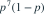
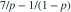
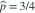

8 次独立 Bernoulli 试验中有 7 次成功，参数限制为  。p 的最大似然估计是多少？
。p 的最大似然估计是多少？
。p 的最大似然估计是多少？- A

- B

- C

- D

我已思考，展开答案与解析
正确答案：B
- 似然与

成正比，不受约束时的极大点是 7/8。 - 在给定区间内，对数似然导数

始终为正，因此似然在该区间递增。 - 最大值在上边界取得，即

。
易错提醒受约束参数空间可能把内部驻点排除，必须检查边界。
南审 813 · 2026 · 一·3(2)，PDF第1页
沿原卷容量1的受约束 Bernoulli MLE 结构改为容量8，重新编写数值与选项。
查看参考来源